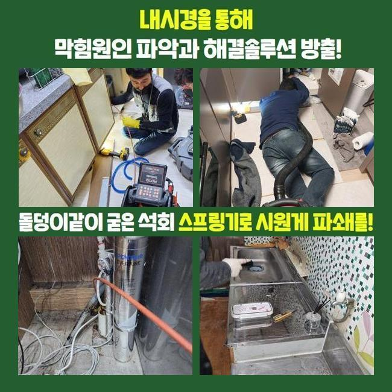
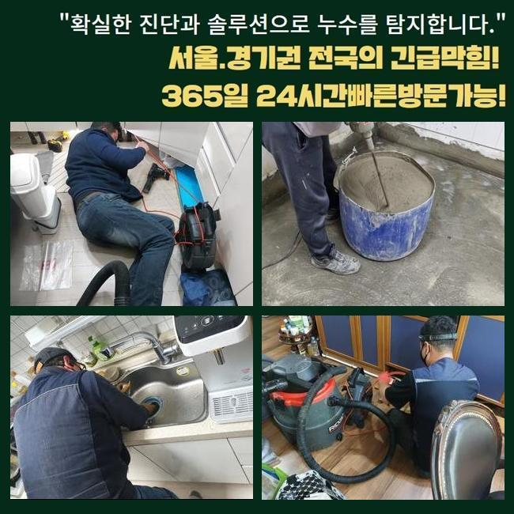
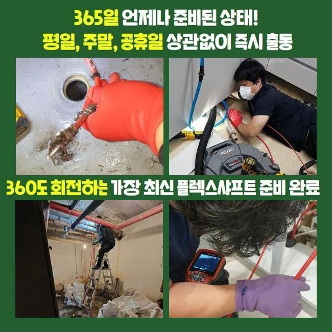
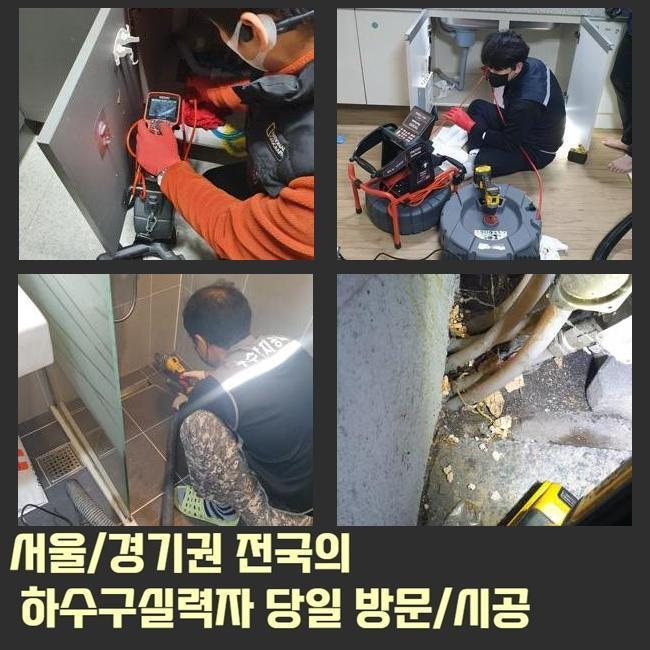
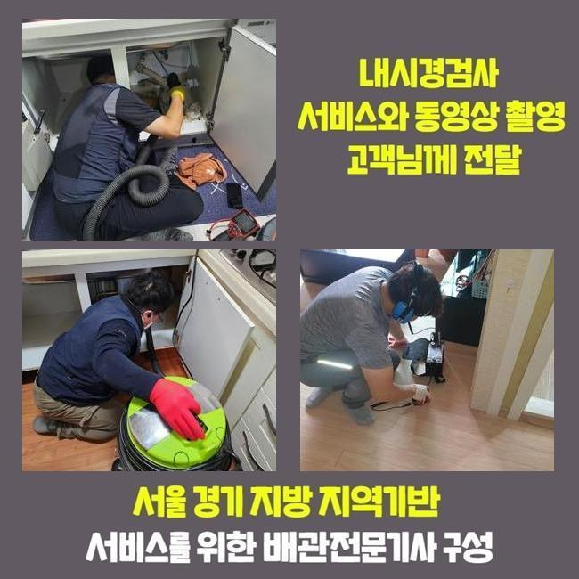
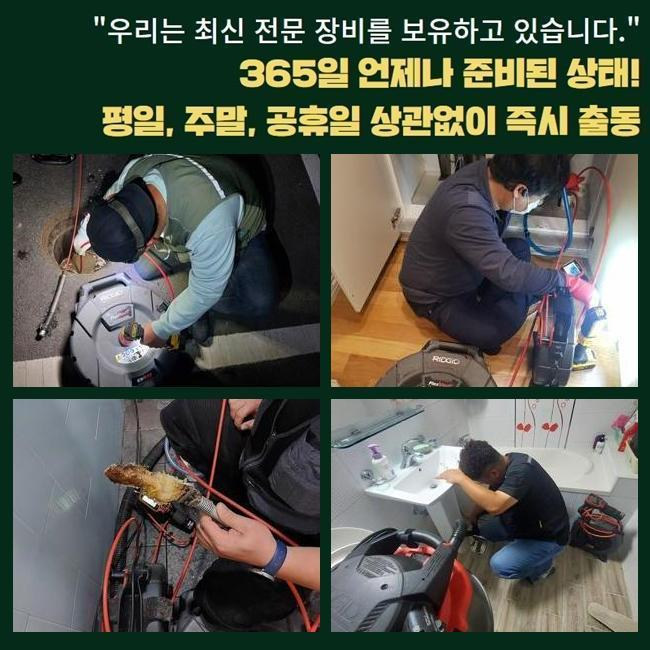
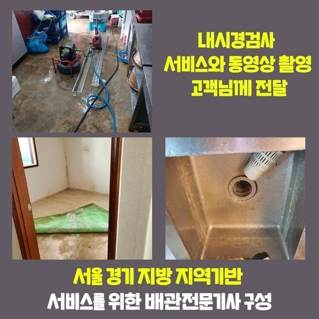

🏠 고양시 화전동오수관뚫음 동산동 하수구청소 통수전문
고양 화전동 하수구막힘 전문 시공 후기

📋 작업 개요
- 위치: 고양 화전동, 화전동, 고양
- 서비스 유형: 하수구막힘, 배관막힘, 맨홀막힘, 역류해결, 뚫는업체, 배관청소, 고압세척
- 작업 일시: 2025. 6. 1. 11:41
- 업체명: 하수구수사대 (010-5615-2118)
🔍 문제 상황
고양시 화전동오수관뚫음 동산동 하수구청소 통수전문
저희업체는 최근의 상업시설의 통수장애를 시정해내고자 내방했는데요
상가관리를 도맡았던 고객의 설명을 듣고 저희들은 상가 안쪽의 화장실쪽에서 계속적인 이물질 역류 막힘들을 시정하기위하여 현장당도를 했는데요
의뢰자는 고착화와 이물퇴적으로 인하여 다양한 불편호소를 계속 받고 계셨어요
이 모든 상황들을 조속히 조치할 생각에 저희들은 도착하고서 관로를 관찰했는데요
계속해서 축적되는 슬러지들이 관로를 좁히게된걸 체크하고 조속히 시정했는데요
지금까지의 데이터로 판단하건대 이 같은 이물질들은 일반적으로 메인시설에서 발견되므로 이런 문제들이 생기게 된걸로 판단했는데요
그러므로 조속히 바깥으로 이동하여 문제들을 야기시키는 하수도의 부위를 확인하고자 검수들을 실시했죠
탐지기기를 운용하여 배관의 스팟을 특정했고 안을 살피니 고착된 형상이 만만치 않았어요
수전 등에 축적된 생활 하수의 잔해와 외측에서 쏟아진 흙까지 뒤섞인 모습이였어요

🔎 원인 분석
💡 전문가 진단: 정밀 진단 장비를 사용하여 슬러지의 고착 여부를 판명하고 타격/세척 작업을 실시했습니다.
이러한 막힘들을 해결하고자 빠르게 적합한 대응들을 실시했고 상가건축물의 시설을 안정적으로 유지하도록 했죠
일정 구간들에 잔해가 누적되면 많은 배수정체를 일으키므로 해결들을 미루지않는게 중요한데요
검수해봤더니 고착물이 구간별로 자리잡은걸 확인했는데요
오염원은 지금까지 누적될 시서 고착물로 크기를 키워가고있었습니다
여러원인이 중첩되어 배수정체가 발생된거라고 판단했죠
그러므로, 여러기기들로 배수관을 청결하게 만들기로 했습니다
장비들을 통해 하수관을 세척해줄때에는 높은 압력의 물줄기가 실시되야했습니다
만일 맨홀쪽에 잔해가 존재할 경우 평상시의 방법으론 역부족일 수 있어요
그렇기에, 고압수청소로 실용적으로 슬러지를 없애주는것이 중요한데요
세척을 거치면 하수관을 청결하게 사용할 수 있고 결함이 누적되는 것을 미리 피할 수 있게됩니다
이를 확인하고, 하수관을 시공한다면 고압 세척과정을 염두에 두시는 것도 권장드립니다

🔧 작업 과정
덧붙여 고착물이 축적되지 못하게 때때로 청소해주는게 요구되고 알맞게 조치한다면 골머리 앓는 일 없이 막힘들을 해결할 수 있습니다
이 부분은 염두에 두고 결함들이 발생했을 때는 명확한 시공이 요구되고 전문업체들의 능력을 바탕으로 흐름에 문제없는 환경구축을 유지해주시는 것이 이행되어야해요
관리해주는게 먼저겠지만 전문가와 협심하여 배관을 깔끔하게 구축하는게 효과적인 방책이 될 수 있겠습니다
세척들을 빈틈없이 이행하려면 구조라던가 특이성들을 알고 있어야 하죠
하수관은 이런저런 소재들로 구성되어있고 많은 배수과정을 거치며 내구성들이 떨어지므로 쎈 압력들을 이용하는건 적절치못합니다
내구성과 현장의 특수성을 파악해 올바른 방법들을 운용하는게 기본이에요
이같은 조건들을 잘 지키면 고압세척들로 이상없는 결과까지 얻게되실거에요
운용했던 석션기기는 강한 흡입으로 배수관의 잔해물을 안전하게 없애주었습니다
석션바구니에 빠져나온 오염원의 찌꺼기를 확인하였고 내시경을 밀어넣어 깊은 지점을 살피니 잔해들이 대다수라 통수가 원활치 못했죠
그렇기에 고수압의 방식으로 저희의경우 이곳에서 발생한 배수정체를 조속하고 효율적으로 해결해주고 배수관의 규모들과 오염물의 위치들을 고려해서 시공을 해주어 온전한 하수관컨디션을 유지하게되었습니다
이런 현상은 대다수 잔해가 내측에 쌓인까닭에 누적되는 결함으로 배수공간이 협소하여 통수들이 정체되는 양상들이 걷잡을 수 없이 커지기도해요
이러한 상태라면 전문가들의 도움으로 내시경장치를 운용해 심층부까지 검수해보고 명확한 기조요소를 없애주는것이 중요하겠습니다
고압노즐 분사를 진행시키면서 저희업체는 타겟위치로 호스들을 삽입해주었고 2M 위치에서는 기름들이 줄기차게 빠져나가는것을 보게되었어요
허나 기름뭉치가 위치해있는 3미터 포인트에선 슬러지들의 상황들을 확인해주고 분사의 세기를 조정하여 세척들을 이행해주었어요
기름고착의 흡착정도가 결코 가볍지않아 온수 고압수청소를 수행했는데 안정성을 목표로하는 요소를 준수하면서 기름뭉치들을 정리해주었어요
막히는 사례는 예기치못하게 발생해 이런저런 고충들을 초래합니다
하수정체는 주로 잔해가 기조로 작용해 발발하기 때문에 한시라도 빨리 통수장애를 해결하는게 좋습니다


✅ 작업 완료
고객의 불편들을 잠재우기위해 조속히 시정해드리도록 할게요
통수오류를 조사하고 상황별 개선사항을 선정해 이물제거에 집중합니다
신속한 대응이 우선고려사항이라 오랫동안 내버려두는 일은 없어야해요
해결책들이 요구될땐 편하게 전화주세요
결함들이 발생하면 조속하게 대응하여 안전성을 갖추고 청결한 배수환경들을 지키겠습니다




⚠️ 하수구 배관 막힘 예방 및 관리 가이드
- ✅ 머리카락, 비닐, 물티슈 등 물에 분해되지 않는 이물질은 하수구 유입을 절대 금지해 주세요.
- ✅ 하수구 거름망을 씌우고 모여진 이물질은 주기적으로 쓰레기통에 바로 비워주셔야 합니다.
- ✅ 배관 노후가 심할 경우 이물질이 더 쉽게 걸리므로 주기적인 배관 세척(고압세척 등)을 권장합니다.
- ✅ 작업 후 1년 이내 재발 시 하수구수사대에서 무상 A/S 보증 서비스를 제공합니다.
💡 핵심 정리
- 확실한 장비 작업(내시경 점검 및 샤프트 스케일링)으로 원인을 뿌리 뽑습니다.
- 작업 후 1년 이내에 동일한 부위 재발 시 100% 무상 A/S 서비스를 보장합니다.
- 서울 · 경기 · 인천 전 지역에 24시간 언제든 긴급 출동할 수 있도록 항시 대기 중입니다.
❓ 자주 묻는 질문 (FAQ)
🚨 고양 화전동 하수구막힘 문제로 고민이신가요?
정확한 원인 진단과 확실한 시공으로 재발 없는 해결을 약속드립니다.
24시간 긴급 출동 | 서울 · 경기 · 인천 전지역 | 1년 내 재발 시 무상 A/S